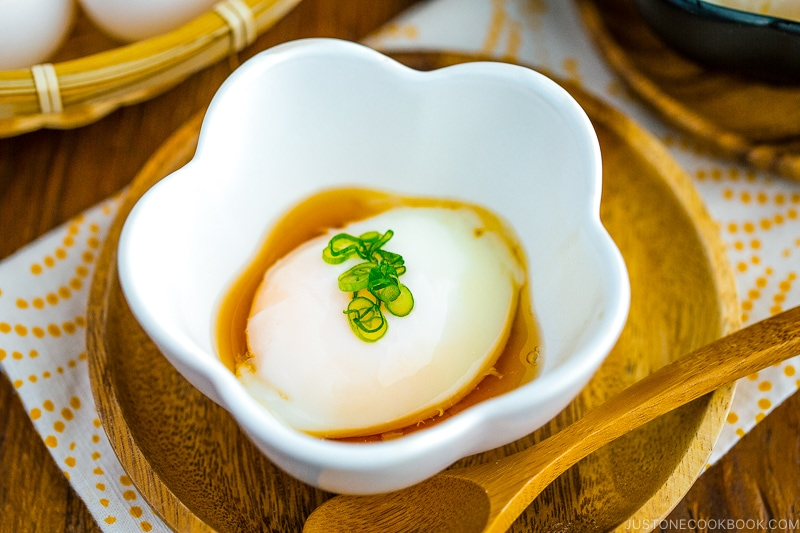

Onsen Eggs

Description
"Onsen" means hot spring in Japanese, and that's
exactly how we make an Onsen Egg, we put it in a little
hot spring. Cooking eggs this way makes the whites soft and
silky, and the yolks become custard like. They are absolutely
delicious. Grab some eggs and let's get cracking!
Ingredients
Directions
- Boil 4 cups of water.
- Once the water is boiling,
remove from heat and add 200 ml of cool water.
- Immediately
add your eggs to the water and cover. This works best with eggs
that are room temperature.
- Let your eggs sit in their Onsen
for 17 minutes.
- After 17 minutes remove your eggs and set to
the side to rest.
- After letting your eggs rest, they're ready
to eat! Crack them into a bowl and enjoy. Traditionally Onsen Eggs are
served with a mixture of dashi, mirin, and soy sauce. I personally like
to have my Onsen Eggs with sesame oil and soy sauce, but they are
delicious all on their own.
- Enjoy!